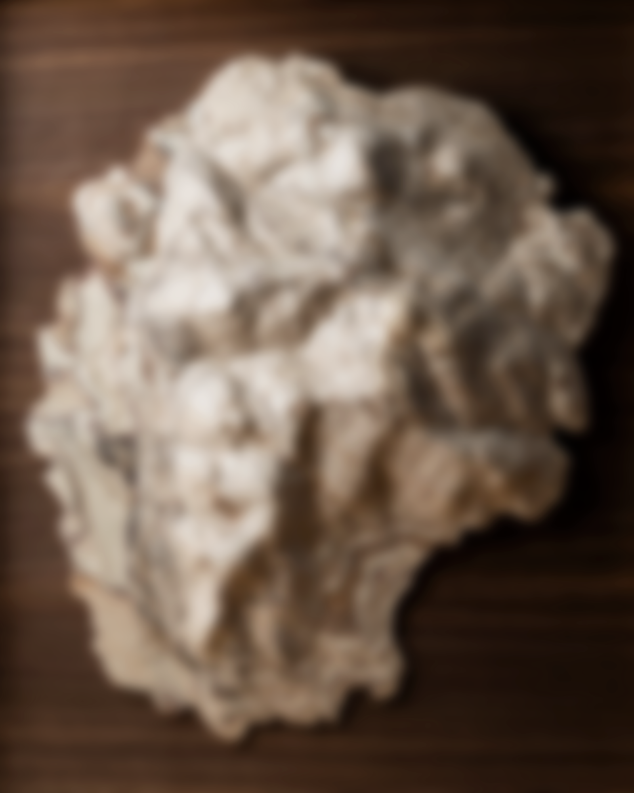

From Geography to Art
The process starts with a conversation about place and meaning.
The journey from terrain data to finished work unfolds through precision carving and hand finishing
—guided by your vision or by artistic direction, depending on what the piece requires.

Close your eyes.
What place appears?
Discovery
Begin With Place
Every commission starts with a conversation—not about dimensions or deadlines, but about meaning. What place holds your story? A summit you return to every season? The coastline that shaped your childhood? The city where everything changed?
During the initial consultation, the focus is on listening closely. Understanding your connection to place shapes how we approach the work—from which geographic features to emphasize to materials that suit the terrain's character. The conversation guides the creative direction without dictating it.
We discuss wood species, scale, and the process of rendering terrain as sculptural relief. By the end of the call, what’s possible is clear—and the next steps are defined.
- 30–45 minute private consultation
- Scale, materials, and placement guidance
- Initial feasibility + next steps
Design & Direction
Finding the Right Approach
Within 2–3 days, you receive private access to an interactive 3D viewer showing your terrain model. Rotate it fully, manipulate the view, and evaluate how topographic contrast translates into relief. The model displays geographic scope, vertical exaggeration, orientation, and scale—providing a complete foundation for design decisions.
Either way, key checkpoints guide the work. Scale, framing proportion, overlays, and finish direction are tested and confirmed before fabrication begins. The goal is always the same: a piece that feels inevitable, not forced.
- Interactive 3D terrain viewer for exploration
- Material and finish options presented
- Detailed timeline and investment breakdown
- Design refined through key checkpoints (collaborative or artist-led)
Data Crafting
Science Becomes Art
Once the core direction is set and your build window is reserved, the technical work begins. High-resolution elevation data is sourced from USGS, NOAA, and other international datasets—often combining multiple sources to achieve the best possible detail. The goal is always the most faithful surface the data can support—clean, detailed, and sculptural at the chosen scale.
That raw data is processed, cleaned, and translated into toolpaths for precision carving. Vertical exaggeration is tuned so key features read clearly at scale, and cutting strategies are refined to preserve fine detail while maintaining structural integrity. Along the way, I test options and share results—so decisions are informed by the real surface as it takes shape.
In parallel, the wood is selected. Each board is hand-chosen for grain pattern, color consistency, and figure. Sustainable domestic hardwoods are sourced from certified mills and architectural reclamation yards—each piece carrying its own history before becoming part of yours. Clients are also welcome to provide meaningful material; I’ll evaluate it for stability and suitability, then advise on the best way to incorporate it.
- Curated terrain data sourcing + preparation
- Relief modeling + fabrication optimization
- Hand-selected hardwood (client-provided material welcome)
- Toolpath strategy + carving preparation

Fabrication
Machine Precision, Human Touch
The Computer Numerical Control (CNC) carving reveals the topography with sub-millimeter fidelity over multiple days (often 12–36 hours of carving time). I monitor the entire cut, adjusting strategy as needed to protect grain and preserve fine contour detail. What emerges is raw geography—accurate, but not yet finished.
Along the way, I test options—finish tone, resin depth, overlay weight. Depending on the commission, these choices are made collaboratively or guided by artistic judgment to honor the place.
Next, the surface is laser-etched with a custom overlay—trails, tree lines, waterways—burned directly into the terrain with crisp clarity. It’s a quiet layer of storytelling that binds the design to the land before any finish or resin is applied.
Then the hand work begins. The surface is sanded through multiple grits, following the terrain’s natural flow. Edges are refined to suit the piece, and the finish is built in layers—stains, oils, or shellac—then sealed for depth and longevity.
Where water is part of the story, resin is poured in custom tones—applied by hand—for depth and clarity. The resin cures for 7-10 days, then is finished by hand: progressive wet-sanding and buffing to optical clarity.
The frame is made specifically for the piece it surrounds—proportioned, milled, and assembled with spline joinery for crisp, strong corners with no visible hardware.
The process concludes with a stainless-steel nameplate, laser-etched and installed with brass hardware —an inscription that anchors the work to place, and to your story—some pieces carry more presence without one.
- 12-36 hours of CNC carving
- 12-24 hours of laser etching (overlay), when applicable
- Hand sanding + finish preparation
- Resin pours (custom tone), when applicable
- Finish application + curing
- Inlay, gilding + fine detailing
- Artist-made frame (spline joinery)
- Custom-engraved nameplate + installation
Delivery & Beyond
Delivered, Installed, Cherished
The finished piece is professionally photographed and signed on the back with the location details and creation date. A custom shipping crate is built with foam padding and corner bracing—these works ship like the art they are.
Delivery is arranged via insured carrier service with museum-standard crating. Fine-art courier logistics are available by request for large installations or time-sensitive deadlines. Local clients may arrange studio pickup, and installation consultation is available —proper mounting is essential for work of this weight and scale.
But delivery isn't the end of the relationship. Every piece includes care guidance and my direct contact. Should repair or refinishing become necessary, I'm available to assess the work. And if a companion piece would complete the story, we can explore that together. These aren't products—they're built to last.
- Professional photography and documentation
- Custom crating and packaging
- Specialist art carrier shipping
- Installation guidance provided
- Care guidance and restoration support
Schedule a Private Consultation
A short call to discuss place, scale, and timeline—then we'll outline next steps.
Begin a Commission